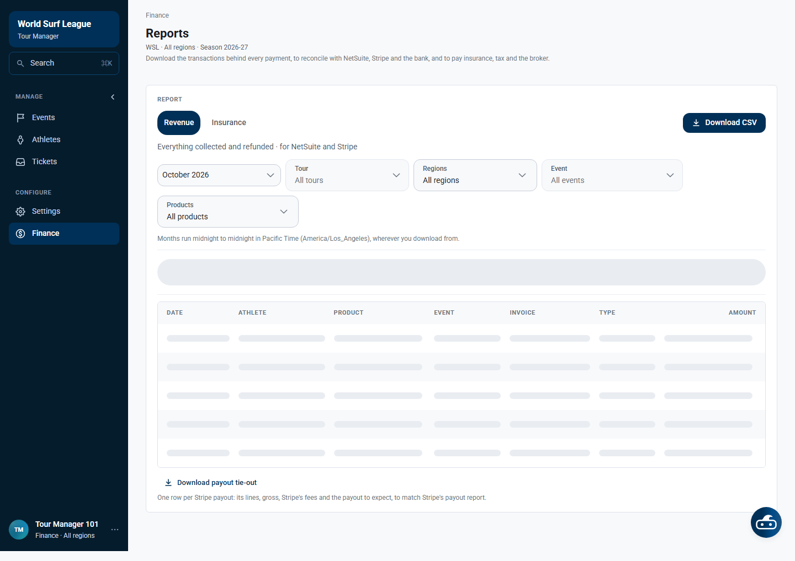
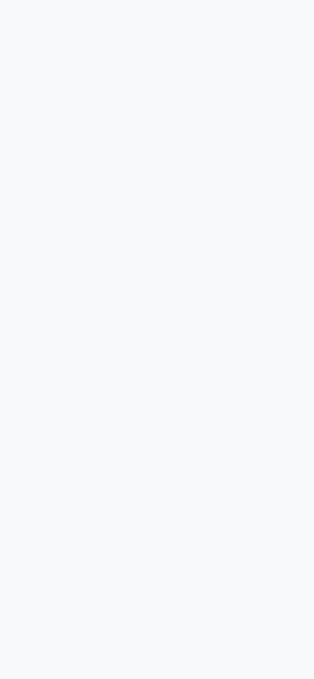

Tour Manager Finance — work guide and test report
The Finance area is available at /tour-manager/finance. The authenticated account was Finance · All regions. This run covered the page workflow, report controls, API integration, downloads, empty state and responsive layouts.
How the page works
- Open Finance from the Tour Manager navigation.
- Choose the Revenue or Insurance report.
- Filter by month, tour, region, event and product.
- Review collected and refunded transactions.
- Use Download CSV for transaction data.
- Use Download payout tie-out to compare Stripe payouts, fees and expected payout.
What was tested
| Area | Result | Details |
|---|
| Access and page load | PASS | Finance login HTTP 200; Finance page loads. |
| Reports | PASS | Revenue and Insurance views are available. |
| Filters | PASS | Month, tour, region, event and product controls are visible. |
| Downloads | PASS | CSV download starts; payout tie-out control is present. |
| API integration | PASS | Revenue summary and report requests return HTTP 200. |
| Responsive layout | PASS | Desktop and mobile screenshots captured. |
| Financial rows | BLOCKED | No transaction fixture exists for the selected October 2026 period. Payment, refund, invoice and payout reconciliation need populated data. |
Desktop view

Mobile view

Next test data needed
Use a fixture containing a collected payment, recovered payment, refund under review, settled refund, invoice and Stripe payout. Then compare the UI rows, CSV export, payout tie-out and API totals.
Raw test results